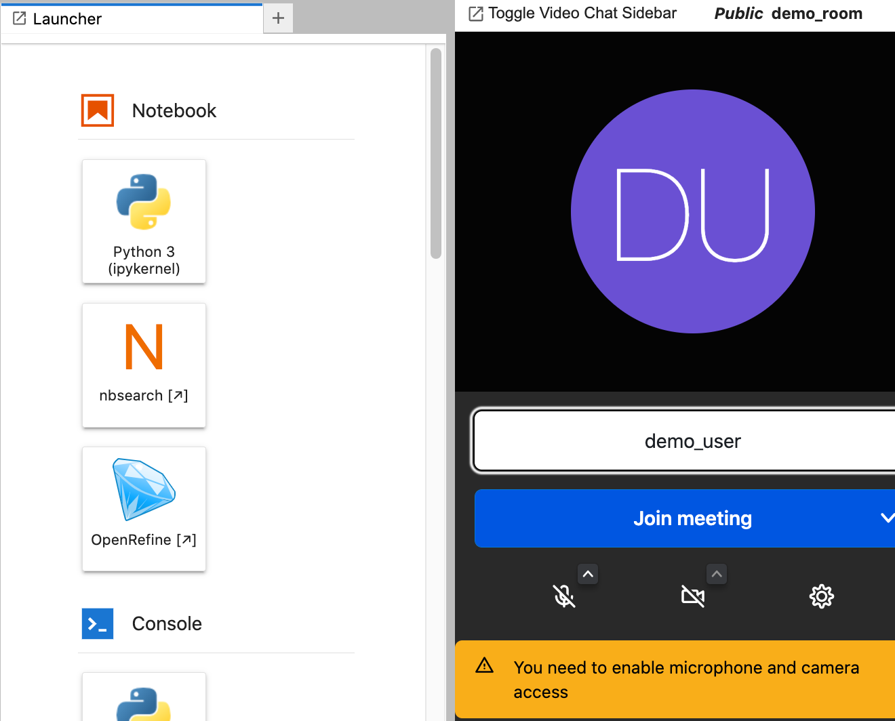

JupyterLab Migration#
With Jupyter classic notebook slated for deprecation, now might be a good time to consider moving to JupyterLab framework UIs, not least so we can act as a pathfinder for other modules.
Assuming an evaluation of migrated notebooks for TM351 passes muster, we hope to migrate TM351 Jupyter activities to JupyterLab for 2022J. There is also an intention to migrate TM129 Robotics related Jupyter activities to JupyterLab, along with a proof-of-concept “serverless” in-browser distribution using JupyterLite, assuming the underlying plumbing can be made to work between a notebook and the robot simulator!
For a demo running purely in the browser, try the demo in JupyterLite.
For a “full server” experience access the demo via MyBinder.

You can also see a Jupyter Book rendered k HTML booversion of the notebooks.
Background#
The Jupyter notebook environment currently used in TM351, TM129, M269, TM358 &c., as well as others currently in production is based on the original IPython notebook.
Several years ago, the Jupyter community started working on a new user environment framework known as JupyterLab. JupyterLab provides an “IDE” (integrated development environment) style environment, rather than the document centric classic notebook environment. A document centric notebook UI, originally called “RetroLab”, built from the JupyterLab framework components will be used as the official Jupyter notebook release from version 7. The original notebook user interface, typically referred to as the “classic” notebook, will be deprecated from official releases and enter a “maintenance only” phase. This means that future improvements to things like accessibility are unlikely to happen unless new community memgers step in to take up the effort.
Risks associated with not migrating away from the deprecated classic notebook environment include: being locked in to outdated, legacy software with little of no community maintenance or support; lack of development and adoption of new features that become commonpalce elsewhere; lack of general currency for users in terms of the use of tools and adoption of corresponding work practices that are to be expected in contemporary development environments.
Based on evidence to date, it is not clear from where, if anywhere, such effort might come, despite the large installed user base, particulalry in the education sector.
My fear is that a commercial educational publisher or learning environment vendor might step in with a promise of maintaining support for institutions wishing to stick with the classic notebook UI, whilst at he same time then locking them in to proprietary features, standards and conventions that are not portable across the wider Jupyter and open source communities.
Issues Associated With Migrating From Classic Notebook to an Alternative User Environment#
Issues associated with migrating to a new user environment may be viewed in terms potential benefits versus potential costs.
In terms of costs, there is a large ecosystem of community as well as independently produced extensions for the classic notebook environment that will not work in the JupyerLab environment. Similarly, there is a large and growing number of JupyterLab framework extensions that will not work in the classic notebook context.
Benefits are those that arise naturally from joing an actively developed project with a growing community and user base. There is also an opportunity to take stock of what we have learned thus far and reflect on what sort of environment might best support teaching and learning across a programme of study (over which we might expect skills to develop from novice level to more expert users). More generally, we might also consider the extent to which a teaching and learning environment might also help develop awareness of, expectations around, and skills associated with, tools of the professional computational trade.
In practical terms, other than simple institutional inertia, what have been some of the blockers, in the OU, real or imagined, to moving away from the currently used classic Jupyter notebooks to alternative environments. In TM351, notebook pedagogy has evolved over the last five or so years of presentation in three main ways:
revision and updating of how notebooks are constructed as written teaching and learning material (chunk size, blend of text and code activities);
revision and updating of the notebook environment (use of colour styles to signpost expected student activity, development of interactive tools to encourage playful exploration an self-directed, self-assessing student activities);
revision and updating of assessment strategies.
The second item is the one that throws up the most tangible blockers to migration. For example, several custom notebook extensions, as well as third party extensions, are used to customise the notebook environment in visual as well as functional terms. For the coloured cell background styling, there are essentially two components: notebook cell metadata, and a custom extension to render notebooks according to cell meadata. To render notebooks with corresponding styling in a new environment will require a custom renderer capable of rendering notebooks according to the metadata. Many IPython extensions that generate customised cell outputs are essentially agnostic as to whether classic or JupyterLab environments are being used and often work equally with any IPython environment (IPython is often the default code execution environment used by Jupyter noebooks, although a wide variety of other programming languages are supported too).
One of the issues associated with migrating to JuptyerLab framework environments is that the development process for building JupyterLab extensions is considerably more involved than devleoping notebook extensions for classic notebook. Classic notebook extensions were often relatively simple HTML, Javascript and CSS bundles requiring no real developer tooling. By contrast, JupyterLab extensions requires a large toolchain to build typescript and node.js applications against a large and complex JupyterLab API that can be hard to navigate and that suffers from a lack of good examples and well documented tutorials.
In part because of the difference in the richness of the JupyerLab IDE style environment versus the document centric RetroLab/Notebook v.7 environment, many JupyterLab extensions may only be meaningful in a JupyterLab context, whereas RetroLab/Notebook v.7 extensions directed at the notebook application are likely to work equally well in the Notebook v.7 and JupyterLab notebook contexts (that is, notebooks opened within JupyterLab).
Costs of mogration are also associated with updating notebooks so that they make most effective usee of any new environment (which we might also think of, in part at least, as a new medium). Ideally, where notebook metadata was used for customisation in classic notebooks, the same metadata should be treated in a similar way by custom renderers in an new environment, which means the cost should be limited to creating new extensions. However, in migrating to some some environments, it may be that notebooks need pre-processing before customisations can be applied to them.
Finally, there may be different forms of user cost associated with changing the environment that must be borne by students and ALs, as end users of the environment, as well module teeams.
For example, we might consider costs associated with changed environments for:
module teams involved with development and maintenance of both teaching and learning materials as well as support materials;
module teams and support staff involved with development, maintenance and testing of the production and maintenance environments, as well as the end-user environment;
ALs working on the same module over many presentations, who may have developed materials tuned to the earlier environment;
students meeting different environments as they progress through several modules and having to learn new skills and habits as well as perhaps having to forget previous, no longer relevant, ones.
Migration Away From Classic Notebook#
There are two UIs supported by the Jupyter community:
Jupyter notebook v7, previously known as
RetroLab;JupyterLab.
There are also other enviromments that work with the Jupyter notebook document format (traditionlly, .ipynb JSON formatted documents, but more recently various text based formats such as MyST (Markedly Structured Text) are gaining popularity, supported by tools such as Jupytext and Quarto, as well as initiatives such as the Executable Book Project). For example, notebooks can be edited using the VS Code and PyCharm IDEs, and can be used in WYSIWYG publishing environments such as Curvenote. There are also a large number of environment that run Jupyter servers and editing environments as off-the-shelf tools in only very lightly customised environments (most customisation comes in the form of integration wih data sources, or the provision of high performance compute nodes, GPUs, etc.).
Classic notebook UI
Currently, the three environments that arguably provide the best alternative to classic Jupyter notebook are:
Jupyter Notebook v7 (originally,
RetroLab), a document centric notebook environment resembling classic notebook;
Notebook v7/Retrolab UI
JupyterLab, a “data science IDE” that combines an IDE aesthetic with embdedded “applications” often generated from or within notebooks;
JupyterLab UI
VS Code with Python and Jupyter extensions enabled, offering the ability to edit Jupyter notebooks and connect to Jupyter kernels from with this popular devleoper IDE.
In terms of the Jupyter community supported enviroments, the JupyterLab UI has more of an IDE-like feel, whereas Jupyter notebook v7. aims to provide a document centric environment more akin to the classic notebook. I am starting to warm to JupyterLab as a teaching and learning environment in the sense that it provides a single locus for a wide range of tools that can be used to support a student as they work through provided materials. For document centric authoring, the notebook UI still offers a “technical literate programming” style environment suited to annotated computational exploration, with enviroments such as Curvenote tending more towards “authoring of computational documents” style of activity.
In this document, I will describe one possible configuration of JupyterLab configured environment that makes uses of a selection of pre-installed extensions to provide an integrated computational teaching and learning environment.
The extensions will support the following:
OU (TM129 & TM351) flavoured notebooks:
OU branded notebooks;
thematic coloured cells (activity cells, call to action cells, tutor feedback / warning cells);
dynamically highlighted cell status.
enriched display:
automatic table of contents for selected document;
native styled text boxes created using MyST flavoured admonition blocks;
text generated diagrams.
improved file management
open files in local filesystem:
provides a way for students to work against files on their local computer (currently requires Chrome browser);
for local VCE, this means we don’t necessarily need to mount a shared directory for notebook files and assets;
manage files using git and Github:
introduces students to version control in a natural way;
provides a way for students to manually synch files over multiple devices and environments.
integrated applications:
spreadsheet editor;
drawio drawing package.
launcher buttons:
OpenRefine;
nbSearch.
possible collaborative features:
chat / video chat / screen share via Jitsi (not tested);
a collaborative mode does exist for Jupyter notebooks but I haven’t got this working yet.
An Exciting Possibility — “Serverless” Delivery of Jupyter Environments Using JupyterLite#
Many of these extensions can be installed in an in-browser JuptyerLite environment. JupyerLite is a Jupyter distribution built on top of the Pyodide WASM environment. This runs entirely within the browser and only requires a webserver to publish the environment. Edited files persist in browser storage. Alternatively, files can be opened from a directory in the local desktop file system, edited and executed in the browser environment, and saved back to the desktop.
A JupyerLite style environment may be appropriate for many modules that only require Python packages supported by pyodide. Note that this includes a large number of Python packages on PyPi that publish an O/S agnostic -py3-none-any.whl flavoured wheel.
Some modules, such as TM351, which rely on computing environments that provide a range of other services, such as databases, or Java powered applications such as OpenRefine, cannot be supported solely by the standalone JupyterLite environment. However, it may be possible to deliver other modules wholly within a JupyterLite environment. Work is currently in -progess to explore the extent to which core (non-optional) practical elements of the TM129 Robotics block may be delivered purely within a JupyterLite environment.
Being able to deliver environments solely through the browser with only a web server required to deliver the environment has resource implications for both students and the OU. For students, downloading the browser environment may require a download of several hundred megabytes each time the environment is downloaded. (However, the application will remain resident and viable in an open browser tab for an extended period of time.) Computation performed by the environment is also at the students expense, although this may be regarded as negligible.
In terms of financial costs, if the environments and their dependencies are downloaded from OU webservers, the bandwidth requirements on the OU may be significant. However, many of the packages are available via CDNs, which means the costs are implicitly transferred to them. If the OU were to heavily promote the use of JupyterLite, we should contribute developer effort to improving the “offline” performance of JupyterLite in terms of improved cacheing and enabling “browser webapp” style support. (This would probably not require a significant allocation of effort, but would improve resource utilisation at a global scale.)
When providing hosted computational environments, the per module presentation cost can run into thousands of pounds. The costs to the OU of providing students with hosted computational environments can be dramatically reduced by students using their own environments. Currently, students can run equivalent local environments the hosted environments using Docker containers. This requires installation by the student of the Docker application and a one time bandwidth cost of up to several gigabytes to download the Docker image. Images are currently downloaded from public third party repositories. Consequently, the hosting and bandwidth cost associated with downloading images are not currently borne by the OU.
Visual Design of Environments#
The visual environment is modified using several extensions:
This extension adds OU logos to the JupyterLab environment; (the favicon has been updated to the new OU logo since the screenshot below was taken):

The branding signals to students that they are working in a recognised and OU approved learning environment. The organisational branding also indicates that appropriate behaviour should be followed when working inside the environment (this is particularly true if documents that are produced are shared with others, either through live collaboration, or otherwise). Subconsciusly, it cues to students that they should adopt a “learning state of mind” when working withing the space.
This extension mimics the custom classic notebook “empinken” extension that supports a range of four thematically coloured background cells (activity, learner, tutor, solution/success). Cell backgrounds are persistent and are toggled from notebook toolbar buttons.
The toggle buttons can be individually enabled / disabled; the colours applied to each cell type are also user customisable:
This extension mimics, in part, the classic notebook “cell status” extension. A visual indication of the cell run status is provided that highlights queued/currently running cells, successfully run cells and run cells that errored:
A separate, off the shelf extension, jupyterlab-contrib/jupyterlab-cell-flash provides an animated “flash” effect to highlight a cell that has just completed execution).
The original classic notebook also provided audible indicators around cell execution, and this will be explored for integration into the JupyterLab extension.
Enriched Display#
The JupyterLab environment provides a dynamically generated table of contents listing for notebooks from the left hand sidebar palette:

The table of contents has two benefits:
it provides an overview of the whole document and signposts key, headed elements within it;
it provides an effective way of navigating to different parts of the document.
Several extensions support the rendering of enriched markdown in JupyterLab and RetorLab notebooks, powered by the agoose77/jupyterlab-markup package. These include:
the
executablebooks/jupyterlab-mystextension is under active devleopment and renders MyST style admonition blocks included in markdown cells in an appropriately styled way;agoose77/markdown-it-mermaid, which is imported natively byjupyterlab-markup; this extension allows you to render wide very of text defined diagrams expressed in code fenced markdown using themermaid.jspackage. Diagram types include flowcharts, sequence diagrams, class diagrams, state diagrams, entity relationship diagrams, Gantt charts and other diagram types.
For example, the following MyST styled admonition block:
```{warning}
This is a warning block.
```
will be rendered as:
Other blocks include danger (red header bar), note (blue), seealso (lilac), important (light grey-green) and tip (light green). The header bars also carry distinguishing leading icons. Using the {admonition} My Title style block, a title can be added to the block and the can be styled using the appropriate admonition type set as a :class: value. For example:
```{admonition} Take this as a warning!
:class: warning
This is a warning block.
```
The MyST syntax also supports various other rich presentation features, such as panels and tabs, rendering support for which may also become available in JupyterLab notebok editors.
The diagramming support bundled with the jupyterlab-markup extension allows mermaid code can be included directly in a markdown cell:
```mermaid
graph LR;
A-->B;
A-->C;
B-->D;
C-->D;
D-->E;
```
The rendered cell then displays the corresponding mermaid rendered image:

Being able to write diagrams that are then automatically rendered provides an accessible, text-based way for creating (and editing) diagrams. It removes the need for graphical image editors and can simplify the process of diagram creation. Access to the raw “source code” of the diagram also allows tutors to modify or extend diagrams, as well as easily create and share their own diagrams back with students.
File Management#
Supporting distance education students who may be accessing materials using local and/or hosted enviroment from one or more devices presents a significant challenge if we are to prevent inconsistencies arising in the files that students are working on.
Local Filesystem Access#
The jupyterlab-contrib/jupyterlab-filesystem-access extension adds local file system access to the JupyterLab environment (currently, Chrome browser only).
Users can select a directory from their local filesytem (which is to say, the files on their own computer) and access that directory from within Jupyter environment wherever that environment is actually hosted.
For students accessing the computational environment via an OU hosted multi-user JupyterHub server, the files are visible and editable within the browser. When code is executed, it is sent to the OU server, executed there, and the result returned for display in the browser. The results of the computation are rendered in the notebook and those rendered outputs are saved back to the original notebook file on host filesystem.
Read and write permissions over the shared directory on the local filesytem are granted to the domain serving the the environment for the duration of a browser session (i.e. as long as at least one tab is open onto the Jupyter server).
Local File System in JupyterLite
Files that exist on the local file system can be opened, edited and saved back to the local file system in JupyerLite BUT new files created in the JupyerLite editor will not be saved back to the local filesystem. Instead, they are opened in the JupyterLite filesystem and must be donwloaded back to the local filesystem, at which point they can be moved into the shared directory and reopened from there.
You should probably then delete the copy save to the JupyterLite filesystem.
This is obviously a workaround and hopefully a better solution will become available at some point.
This extension works (-ish…!) for both the hosted and local container environments, with the following consequences:
hosted environment: students can work on files using the hosted environment that are resident on the student’s local machine. This means that students can retain and work from a local copy of their files, rather than files that exist on the server:
advantages: for students who always access the remote environment using the same physical, computer, they will work with copies of files that exist on that computer; this means that a student can use a local environment and the hosted environment to work on exactly the same files.
disadvantages: if a student accesses the hosted environment from a different computer, their previously worked on files will not be available unless they were manually copied into the persistent file storage provided by the hosted environment.
Git / Github Support#
The off-the-shelf jupyterlab/jupyterlab-git extension adds various tools to support working with files in git managed repositories.
git Repository and File Management#
If the git managed repository is configured by cloning a private remote repository on Github, the user is automatically prompted for their GitHub username and token (tokens can be set from settings/tokens; the only permissions that need granting are the permissions over working with repositories).
We can clone a repo from a remote repository, such as GitHub:
We are then prompted for Github credentials. The “password” should actually be a Github API token:
The temporary persistence of the credential seems a little flaky to me at the moment, but that may be the price students have to pay at the moment for working with this extension… Your browser may also save the credentials into the browser password manager.
The repository is cloned into a new directory with the same name as the repository name:
If we now enter the repository and select the git sidebar palette option, we are provided with a simple git user interface that allows us to satge and view staged files, make commits and make push and pull requests to the parent repository (an authentication prompt is raised for push and pull and actions).
If students create a private Github repository for their module files, they can use this extension to help them manage their files under git control, and maintain control over their files in their own repository. For students working across multiple devices and environments, the Github repository can act as their central file store if they run a Git client on each device they want to access the files from.
git Differencing#
The git extension also provides tools for differencing (diffing) files, which is to say, comparing different versions of files. On the first commit, you should provide an email address and name to identify the commit (if you omit this step, an error will be raised and you will need to add the details manually from the command line (a prompt tells you how to do this).
The git button on a notebook will compare the saved version of the notebook with the last committed version:
Note that the notebook is not saved when you click the git button, so the the visible view of the notebook may differ from the (saved) version that is compared with the last committed version.
The “clock” icon gives a difference between the file and the last checkpointed version of the notebook. (The checkpointed version is a version that the notebook can be reverted back to. By default, the notebook autosaves regularly but checkpoints are only created by explicit (manual) saves..)
The differencing support is likely to be useful to module terms for production and maintenance and may be useful to students wishing to compare their own versions of notebooks where code in a checkpointed version runs correctly but later modified code doesn’t.
Directory / Archive Downloading#
The jupyterlab-contrib/jupyter-archive extension provides a convenient way of downloading and zipping files from a selected directory.
This works for local and hosted environments and may provide a convenient way for students to save the contents of a working TMA related directory for use as a submission to the ETMA system.
Note — this extension could be used as the basis for a custom extension that could run additional quality checks over the contents of a directory to ensure that it meets the requirements of the eTMA system, for example as regards file name validity, size of upload, etc. It might also warn users about the presence of possibly inappropriate files to include in the upload.
Integrated Applications and Editors#
The JupyterLab environment allows multiple notebooks, and other applications, to be rendered, and arranged as required, within the lab “desktop”.
A couple of applications that might be generally useful for diagrams or annotating images are the jlab-image-editor simple image editor and the draw.io drawing package.
Image Editor#
The jupyterlab-contrib/jlab-image-editor provides a range of additional image editing tool the the image previewer.
Double clicking an image file in the file listing opens a preview window displaying it containing the image editro controls. SImple lines and rectangular shapes can be drawa over the image, and the image can be cropped, rotated etc. Currently, there is no option to add text.
draw.io Drawing Package#
The QuantStack//jupyterlab-drawio package is an old demostration that might still be useful. It embeds the draw.io app inside JuptyerLab. The application is opened from the Launcher Diagram icon:
Within the editor, you can create your own diagrams using a wide range of diagram primitives:
Raw (editable) files are saved to the current environment directory as .dio files. Unfortunately, there doesnlt appear to be a way to export images, so having drawn a diagram, you would have to screenshot it in order to get an image file corresponding to your diagram.
Jupyter Notebook Templates#
Providing notebook templates opens up a range of possibilities for defining reusable “worksheets” for particular sorts of activity.
Templated notebooks could be used as the basis for standardised “portfolio activity” activities, such as are employed in TM129.
Templated notebooks might include boilerplate package imports, as well as offering a notebook structure that encourages the user to engage in a particular sequence of tasks, or follow a particular path through a standardised activity type.
Template notebooks can be added to a full server disribution of JupyerLab using the jpmorganchase/jupyterlab_templates extension.
JupyterLab Workspaces#
An under-utilised and often ignored feature of JupyerLab is the notion of JupyterLab workspaces.
JupyterLab workspaces capture the layout of panels in a JuptyerLab session. For a user working within the same JupyterLab environment on a range of tasks, different user workspaces can be used to persist a different lab layout for each task. For exampe, a student could maintain one workspace as they work through teaching materials, one for a current TMA, and one for work-in-progress towards the EMA.
Currently, workspaces are essentially managed manually: in JupyterLab, change the URL path /lab/ to /lab/workspaces/myworkspace to enter the workspace myworkspace. Save the current configuration / layout of the workspace from the File menu.
Collaborative Working Support#
A wide variety of online applications now offer real time collaborative support (JupyterLab — Real Time Collaboration). Migrating to JuptyerLab or Jupyer Notebook v7/RetroLab offers the possibility of “collaborative notebooks”, where multiple users, such as collaborating students in a group project, or a tutor and a student, work on the same notebook.
Each user is represented in their own view of the document with a named cursor, and updates made to the document by either party are visible in the copy of the other party. This feature is still in its early stages, with various usability issues still to contend with (such as if two people collaborate on a document, then make separate, independent changes to their copy of the document, then collaborate again. But for one user interceding in a “primary owner’s” copy of a document, it can be be quite effective.
The mechanism for real-time collabration between users is slightly different in JupyerLite vs. served environments. The following example is from the JupyterLite environment:
Jupyter Videochat#
Another way of supporting collaboration is to use the jupyterlab-contrib/jupyter-videochat extension which adds Jitsi mediated conferencing support to JupyterLab environments. *This is only available in served evironments.)
Users can create a room from a side bar panel:
They are moved into a lobby area to set up their room name and video and audio settings.

Inside the room, they have access to standard collaboration tools, such as camera, microphone, text chat and screensharing.
Three main issues arise associated with collaborative support:
security settings on hosted servers: do the hosted servers and netwrok configurations allow transport via required ports and protocols;
document security: to what extent can collaborating users modify, create and delete each others’ files;
safeguarding: when students or students and ALs are in a collaborative space, what safeguarding measures are in place? (Activity in the shared spaces is not recorded; however, sever logs may be able to demonstrate whether two or more identifable users have accessed the same shared space at the same or different times.)
Note that students running locally served environments will not be able to use those for collaborative working unless they are configured as collaborative serviers and exposed to the public internet. This is probably a step too far in terms of risk management.